Kandy
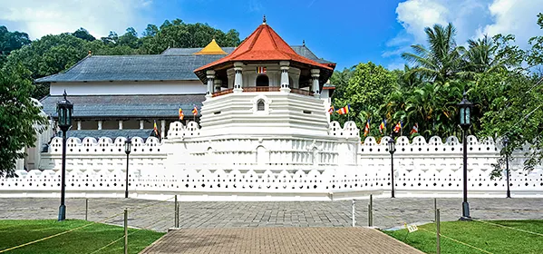
Kandy is a large city in central Sri Lanka. It's set on a plateau surrounded by mountains, which are home
to tea plantations and biodiverse rainforest. The city's heart is scenic Kandy Lake (Bogambara Lake), which
is popular for strolling. Kandy is famed for sacred Buddhist sites, including the Temple of the Tooth relic.
Why Kandy?
The Kandy Esala Perahera also known as The Festival of the Tooth is a festival held in July and August in Kandy.
This historical procession is held annually to pay homage to the Sacred Tooth Relic of Lord Buddha,
which is housed at the Sri Dalada Maligawa. Also kandy is famous for its cultural show.
More About Kandy
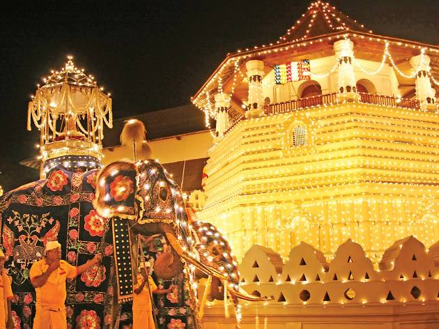
Sigiriya
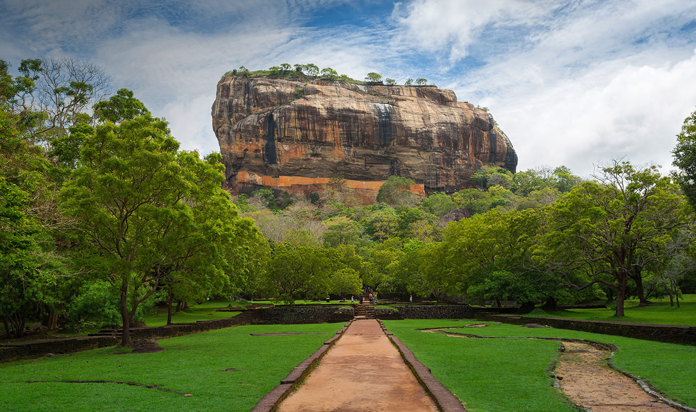
Sigiriya is located in the North Central Province of Sri Lanka. It is a popular stop for tourists who are
interested in its archeological ruins.
Why Sigiriya?
Sigiriya is mainly famous for the ancient rock fortress "sigiriya rock".This rock fortress is famous for
its archeological significance and is also called the 8th wonder of the world. Apart from the rock fortress,
if you decide to visit Sigiriya during your stay in Sri Lanka, another popular activity is safari in the Minneriya
national park.
More about Sigiriya
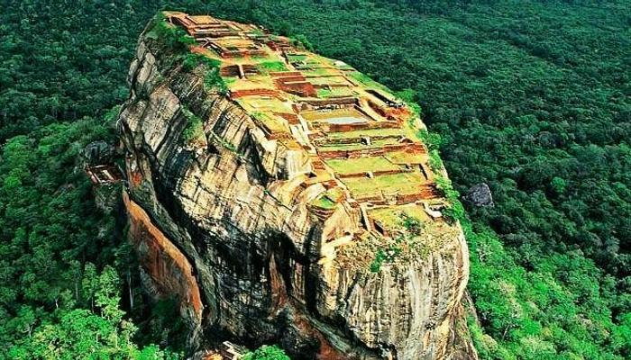
Ella

Ella is a small town in the Badulla District of Uva Province, Sri Lanka.
Ella is pure natural beauty, with its waterfalls, greenery, and hills it is just jaw-dropping.
It has views that one hasn’t witnessed before, scenes one hasn't seen before and nature one hasn't
felt before. Ella is the perfect place to go to if one wants to refresh the brain. It has many famous
places and has been under the attention of tourist for a decent amount of time now.
Why Ella?
Ella is famous for many things.One of which is the 9 arch bridge.It is famous for
the bridge's architectural ingenuity and the profuse greenery in the nearby hillsides.Another famous
attraction place is mini adams peak which is hiking.There are more activities in Ella you can try
like: Ravana Falls, Ravanas cave,Flying Ravana (Zip lining), and have an scenic train tride from nanu oya to
Ella.
More about Ella
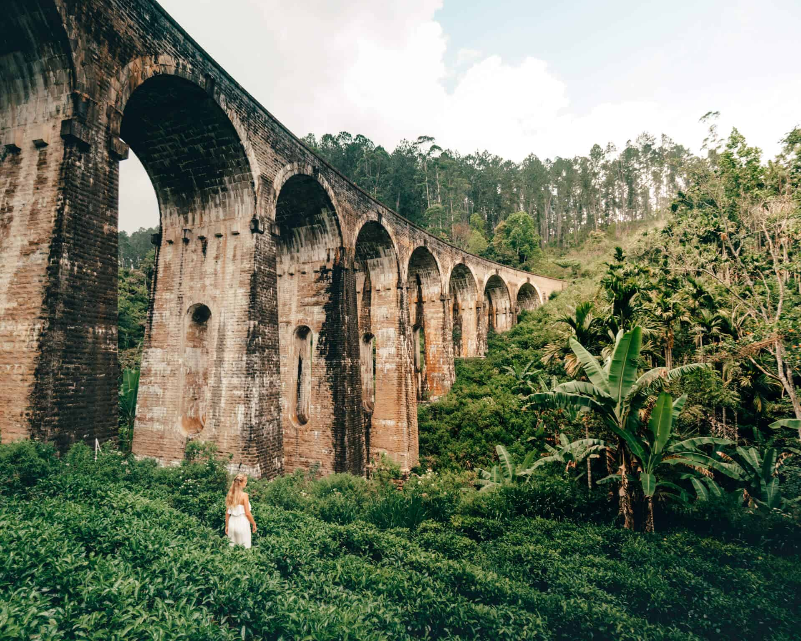
Galle
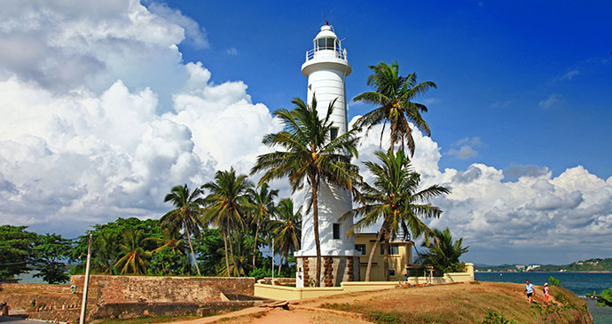
Galle is a city on the southwest coast of Sri Lanka. The town has a World Heritage Site to its
name and that is predominantly responsible for its popularity with tourists.
Why Galle?
Galle is mainly famous for the Galle fort.Apart from that another place of attraction in galle is
Rumassala and the jungle beach.
More about Galle
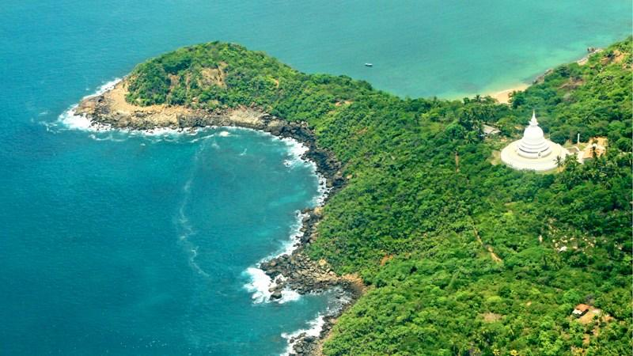
Nuwara eliya
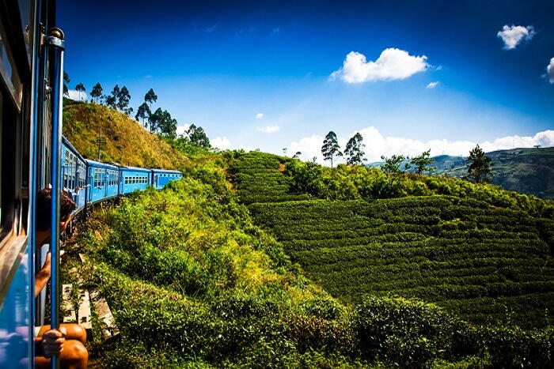
This city in the Hill Country is rather colonial in its appearance. The temperate climate endeared
itself to the Englishmen who colonized the island over a century ago. It was even known as 'Little England.'
Why Nuwara eliya?
Nuwara eliya is famous for many things.The most visited locations in Nuwara eliya is: Hakgala Botanical gardens,
Gregory Lake,Horton Plains,seeta amman kovil,and strawberry and tea factory visiting.
More about Nuwara eliya
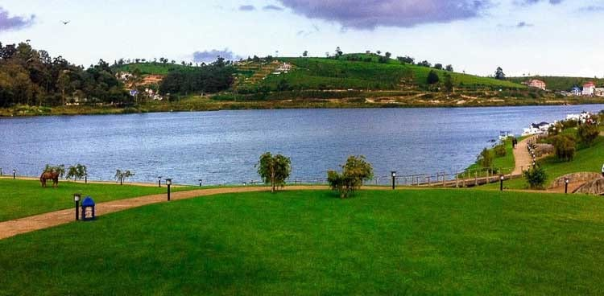
Mirissa
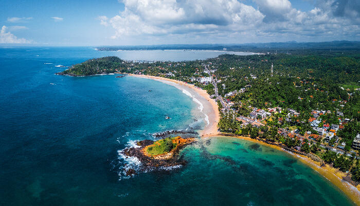
Mirissa is one of the main beach destinations in southern Sri Lanka. The area has it all, beautiful beaches,
surf waves, whale watching and great bars.
Why Mirissa?
Fringing two sandy bays separated by a rock island reachable at low tide, Mirissa feels hidden
away compared to Sri Lanka’s other busier resort towns. While the quiet sands are sprinkled with
bars and surf rentals, it’s Mirissa’s May-to-November whale-watching boat trips that steal the show.
More about Mirissa
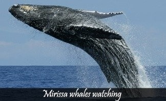